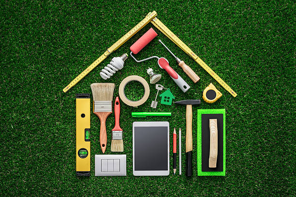

SUSTAINABILITY
Small actions today, big impact tomorrow.
WASTE TYPE

5 R's of SUSTAINABILITY
The 5 R's of sustainability are a set of principles aimed at promoting responsible consumption, waste reduction, and environmental conservation. These principles guide individuals and communities in adopting more sustainable practices. The 5 R's are: Reduce, Reuse, Recycle, Refuse, Rot.

ECO-HEROES
"Eco-heroes" are individuals who passionately work to protect the environment, promote sustainability, and inspire positive change in environmental practices. They lead efforts to address issues like climate change and biodiversity loss, encouraging others to adopt eco-friendly habits and contribute to a more sustainable world.

DIY's
DIY (Do It Yourself) projects can play a significant role in promoting sustainability. By incorporating eco-friendly practices, reusing materials, and reducing waste, DIY enthusiasts can contribute to a more sustainable lifestyle. Here are some DIY ideas in the context of sustainability.

GREEN BUSINESS
A green business, also known as a sustainable or eco-friendly business, operates with a commitment to minimizing its negative impact on the environment while maximizing positive social and economic outcomes. Green businesses aim to balance profit with environmental and social responsibility.